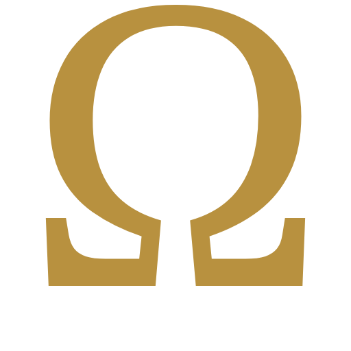

Rune Grimoire
Greek Alphabet
Overview
Like the Hebrew alphabet, the Greek alphabet is widely used in magical ritual, though as the classical language is taught less often than it once was, it tends to appear in later grimoires as a simple substitution cipher rather than a working language.
Where the Hebrew alphabet is believed to have been given to humankind by God through Moses, the origins of Greek are wrapped in several competing legends. The most colorful holds that Hermes, the god of communication, invented it after being inspired by the wing-shapes of a flock of cranes in flight; by one tradition the letters were even kept in crane-skin bags in the bird's honor. Another story credits the three Fates with the five vowels and the letters B and T, Palamedes (also said to have invented counting and currency) with the next eleven, and Epicharmus of Sicily and Simonides with the rest.
The Greek alphabet has been hugely influential, the source of most European alphabets, and it is the oldest still in continuous use: the Ionic form used today was standardized four centuries before the birth of Christ. Each letter carries a sound, a meaning, a number, and a corresponding organ of the body, and these esoteric correspondences make it as effective in ritual and divination as the runes. Gematria, the art of reading the numerical values of letters, shares its root with "geometry," so it is no surprise that so many Greek letters appear in the mathematical formulae of sacred geometry. Like the Hebrew alphabet, the Greek alphabet is believed to hold within it all the secrets of the Universe.
Letter Correspondences
| Letter | Name | Sound | Meaning | Value | Organ of the Body |
|---|---|---|---|---|---|
| Α | Alpha | A | cattle | 1 | head |
| Β | Beta | B | demon | 2 | neck |
| Γ | Gamma | G | divinity | 3 | shoulders |
| Δ | Delta | D | fourfold | 4 | breast |
| Ε | Epsilon | E | ether | 5 | diaphragm |
| Ζ | Zeta | Z | sacrifice | 6 | belly |
| Η | Eta | E | joy | 7 | genitals |
| Θ | Theta | Th | crystal sphere | 8 | thighs |
| Ι | Iota | I | destiny | 10 | knees |
| Κ | Kappa | K | illness | 20 | shins |
| Λ | Lambda | L | growth | 30 | ankles |
| Μ | Mu | M | trees | 40 | feet |
| Ν | Nu | N | hag | 50 | feet |
| Ξ | Xi | X | fifteen stars | 60 | ankles |
| Ο | Omicron | O | sun | 70 | shins |
| Π | Pi | P | solar halo | 80 | knees |
| Ρ | Rho | R | fruitfulness | 100 | thighs |
| Σ | Sigma | S | psychopomp | 200 | genitals |
| Τ | Tau | T | human being | 300 | belly |
| Υ | Ypsilon | U | flow | 400 | diaphragm |
| Φ | Phi | F | phallus | 500 | breast |
| Χ | Chi | Ch | property | 600 | shoulders |
| Ψ | Psi | Ps | heavenly light | 700 | neck |
| Ω | Omega | O | abundance | 800 | head |